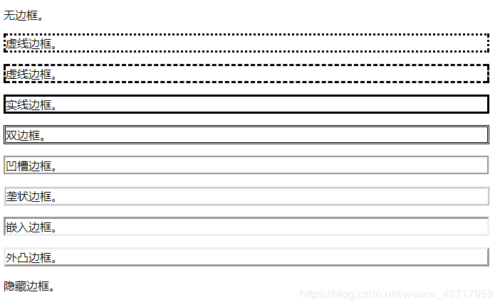
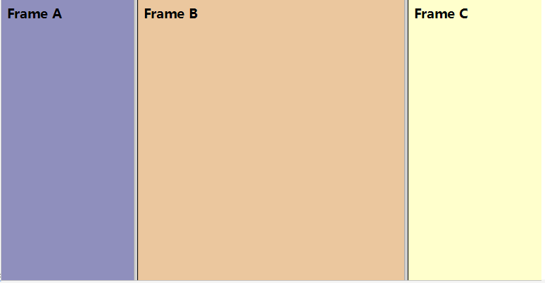

原文连接:https://www.cnblogs.com/xuanjiange/p/10696887.html
以下内容部分转载自菜鸟教程
CSS层叠样式表(Cascading Style Sheets)
内联：
<p style="...">内嵌：
<style>
hr {color:sienna;}
p {margin-left:20px;}
body {background-image:url("images/back40.gif");}
</style>外部样式文件：
<link rel="stylesheet" type="text/css" href="url">rel 属性，规定当前文档与被链接文档/资源之间的关系。
优先级：
内联>内嵌>外部样式文件
CSS选择器
元素选择器
p{...}
div{...}类选择器
.class{...}ID选择器
#id{}设置全局样式
CSS Position(定位与布局
position 属性的五个值：
static
relative
fixed
absolute
sticky
必须先设定position才能设置元素定位
static
元素的默认值，没有定位，遵循正常的文档流对象。
静态定位的元素不会受到 top, bottom, left, right影响。
fixed 定位
元素的位置相对于浏览器窗口是固定位置。
即使窗口是滚动的它也不会移动。
注意：
Fixed 定位在 IE7 和 IE8 下需要描述 !DOCTYPE 才能支持。
Fixed定位使元素的位置与文档流无关，因此不占据空间。
Fixed定位的元素和其他元素重叠。
relative 定位
相对定位元素的定位是相对其正常位置。
移动相对定位元素，但它原本所占的空间不会改变。
相对定位元素经常被用来作为绝对定位元素的容器块。
absolute 定位
绝对定位的元素的位置相对于最近的已定位父元素，如果元素没有已定位的父元素，那么它的位置相对于<html>:
absolute 定位使元素的位置与文档流无关，因此不占据空间。
absolute 定位的元素和其他元素重叠。
sticky 定位
sticky 粘性定位。
position: sticky; 基于用户的滚动位置来定位。
粘性定位的元素是依赖于用户的滚动，在 position:relative 与 position:fixed 定位之间切换。
它的行为就像 position:relative; 而当页面滚动超出目标区域时，它的表现就像 position:fixed;，它会固定在目标位置。
元素定位表现为在跨越特定阈值前为相对定位，之后为固定定位。
这个特定阈值指的是 top, right, bottom 或 left 之一，换言之，指定 top, right, bottom 或 left 四个阈值其中之一，才可使粘性定位生效。否则其行为与相对定位相同。
注意:
Internet Explorer, Edge 15 及更早 IE 版本不支持 sticky 定位。 Safari 需要使用 -webkit- prefix。
重叠元素
z-index
元素的定位与文档流无关，所以它们可以覆盖页面上的其它元素
z-index属性指定了一个元素的堆叠顺序（哪个元素应该放在前面，或后面）
一个元素可以有正数或负数的堆叠顺序：
具有更高堆叠顺序的元素总是在较低的堆叠顺序元素的前面。
注意：
如果两个定位元素重叠，没有指定z - index，最后定位在HTML代码中的元素将被显示在最前面。
CSS边框
border-style 值:
none: 默认无边框
dotted: 点线边框
dashed: 虚线边框
solid: 实线边框
double: 两个边框。 两个边框的宽度和 border-width 的值相同
groove: 3D沟槽边框（凹槽边框）。效果取决于边框的颜色值
ridge: 3D脊边框（垄状边框）。效果取决于边框的颜色值
inset:3D的嵌入边框。效果取决于边框的颜色值
outset: 3D突出边框。 效果取决于边框的颜色值
hidden:隐藏边框

边框宽度
border-width
为边框指定宽度有两种方法：可以指定长度值，比如 2px 或 0.1em(单位为 px, pt, cm, em 等)，或者使用关键字thick 、medium（默认值） 和 thin。
注意：
"border-width" 属性 如果单独使用则不起作用。要先使用 "border-style" 属性来设置边框。
CSS 没有定义 3 个关键字的具体宽度，所以一个用户可能把 thick 、medium 和 thin 分别设置为等于 5px、3px 和 2px，而另一个用户则分别设置为 3px、2px 和 1px。
边框颜色
border-color属性设置边框的颜色
- name - 指定颜色的名称，如 "red"
- RGB - 指定 RGB 值, 如 "rgb(255,0,0)"
- Hex - 指定16进制值, 如 "#ff0000"
也可以设置边框的颜色为"transparent"。
注意： border-color单独使用是不起作用的，必须得先使用border-style来设置边框样式。
边框-单独设置各边
p {
border-top-style:dotted;
border-right-style:solid;
border-bottom-style:dotted;
border-left-style:solid;
}border-style属性可以有1-4个值：
- border-style:dotted solid double dashed;
- 上边框是 dotted
- 右边框是 solid
- 底边框是 double
- 左边框是 dashed
- border-style:dotted solid double;
- 上边框是 dotted
- 左、右边框是 solid
- 底边框是 double
- border-style:dotted solid;
- 上、底边框是 dotted
- 右、左边框是 solid
- border-style:dotted;
- 四面边框是 dotted
边框-简写属性
border:5px solid red;
CSS背景
定义HTML元素的背景。
background-color
background-image
background-repeat
background-attachment
background-position
背景颜色
background-color
颜色值定义:
十六进制 - 如："#ff0000"
RGB - 如："rgb(255,0,0)"
颜色名称 - 如："red"
背景图像
background-image
默认图像平铺重复显示，以覆盖整个元素实体.
页面背景图片设置实例:
水平方向平铺 repeat-x
背景图像- 设置定位与不平铺
让背景图像不影响文本的排版
background-repeat
背景图像-定位
background-position
背景- 简写属性
background：
body {background:#ffffff url('img_tree.png') no-repeat right top;}
属性值的顺序为：
- background-color
- background-image
- background-repeat
- background-attachment
- background-position
以上属性无需全部使用，按照页面的实际需要使用.
字体、文本属性：
文本颜色
color
文本的对齐方式
text-align：
left 左对齐
right 右对齐
center 文本居中
justify 每一行展开宽度相等，左，右外边距是对齐（如杂志和报纸）。
文本修饰
text-decoration
text-decoration:none删除文本修饰
text-decoration:overline上划线
text-decoration:line-through 中划线
text-decoration:underline下划线
文本转换
text-transform:uppercase设置文本全大写
text-transform:lowercase设置文本全小写
text-transform:capitalize设置文本首字母大写
文本缩进
text-indent:10px设置文本首行缩进
文本行高
line-height
文本间距
word-spacing单词间距
letter-spacing字母间距
字体设置
font-family可以设置多个，由用户使用的浏览器进行识别，优先级依次递减
注意: 如果字体的名称超过一个字，必须用引号
多个字体系列是用一个逗号分隔指明：
font-family:"Times New Roman", Times, serif
字体样式
font-style:normal正常样式
font-style:italic斜体
字体大小
font-size
<h1> - <h6>表示标题和<p>表示段落：
em字体大小
1em在浏览器中默认的文字大小是16px。
em：px/16=em
CSS 列表
不同的列表项标记
list-style-type:
circle空心圆点
disc实心圆点
square方形
decimal十进制数字
decimal-leading-zero十进制数字前置0
greek希腊语
armenian亚美尼亚语
cjk-ideographic中文大写数字
georgian乔治亚风格
hebrew犹太风格
hiragana日语-平假名
katakana-iroha日语-片假名
lower-alpha小写阿拉伯语
upper-alpha大写阿拉伯语
lower-roman小写罗马语
upper-roman大写罗马语
lower-greek小写希腊语
latin拉丁语
upper-latin大写拉丁语
lower-latin小写拉丁语
none无
作为列表项标记的图像
list-style-image: url
简写属性
list-style: square url("sqpurple.gif");
- list-style-type
- list-style-position (有关说明，请参见下面的CSS属性表)
- list-style-image
上述值丢失任意个，其余仍在指定的顺序，就没关系。
CSS表格
表格边框
border
折叠边框
border-collapse
表格宽度和高度
table { width:100%; }
th,td { height:50px; }
表格文字对齐
text-align文本对齐
vertical-align垂直对齐
表格填充
padding
表格颜色
伪类(Pseudo-classes)
anchor伪类
a:link {color:#FF0000;} /* 未访问的链接 */
a:visited {color:#00FF00;} /* 已访问的链接 */
a:hover {color:#FF00FF;} /* 鼠标划过链接 */
a:active {color:#0000FF;} /* 已选中的链接 */
注意：
在CSS定义中，a:hover 必须被置于 a:link 和 a:visited 之后，才是有效的。
在 CSS 定义中，a:active 必须被置于 a:hover 之后，才是有效的。
伪类的名称不区分大小写。
first-child 伪类
first-child 伪类选择父元素的第一个子元素。
p:first-child { color:blue; }
注意：
在IE8的之前版本必须声明<!DOCTYPE> ，first-child 才能生效。
匹配所有<p> 元素中的第一个 <i> 元素
p > i:first-child { color:blue; }
匹配所有作为第一个子元素的 <p> 元素中的所有 <i> 元素
p:first-child i { color:blue; }
CSS - :lang 伪类
:lang 伪类为不同的语言定义特殊的规则
注意：
IE8必须声明<!DOCTYPE>才能支持;lang伪类。
:lang 类为属性值为 no 的q元素定义引号的类型：
q:lang(no) {quotes: "~" "~";}
补充（杂项）：
CSS display 属性
规定元素应该生成的框的类型。
| 值 | 描述 |
|---|---|
| none | 此元素不会被显示。 |
| block | 此元素将显示为块级元素，此元素前后会带有换行符。 |
| inline | 默认。此元素会被显示为内联元素，元素前后没有换行符。 |
| inline-block | 行内块元素。（CSS2.1 新增的值） |
| list-item | 此元素会作为列表显示。 |
| run-in | 此元素会根据上下文作为块级元素或内联元素显示。 |
| compact | CSS 中有值 compact，不过由于缺乏广泛支持，已经从 CSS2.1 中删除。 |
| marker | CSS 中有值 marker，不过由于缺乏广泛支持，已经从 CSS2.1 中删除。 |
| table | 此元素会作为块级表格来显示（类似 <table>），表格前后带有换行符。 |
| inline-table | 此元素会作为内联表格来显示（类似 <table>），表格前后没有换行符。 |
| table-row-group | 此元素会作为一个或多个行的分组来显示（类似 <tbody>）。 |
| table-header-group | 此元素会作为一个或多个行的分组来显示（类似 <thead>）。 |
| table-footer-group | 此元素会作为一个或多个行的分组来显示（类似 <tfoot>）。 |
| table-row | 此元素会作为一个表格行显示（类似 <tr>）。 |
| table-column-group | 此元素会作为一个或多个列的分组来显示（类似 <colgroup>）。 |
| table-column | 此元素会作为一个单元格列显示（类似 <col>） |
| table-cell | 此元素会作为一个表格单元格显示（类似 <td> 和 <th>） |
| table-caption | 此元素会作为一个表格标题显示（类似 <caption>） |
| inherit | 规定应该从父元素继承 display 属性的值。 |
特殊效果（不定时更新）
@keyframes创建动画
@keyframes animationname {keyframes-selector {css-styles;}}
创建动画通过逐步改变从一个CSS样式设定到另一个。
在动画过程中，您可以更改CSS样式的设定多次。
指定变化使用from、to或%。
0％是开头动画，100％是当动画完成。
注意:
使用animation属性来控制动画的外观，还使用选择器绑定动画。.
为了获得最佳的浏览器支持，应始终定义0％和100％的选择器。
不同浏览器下设置不同
@keyframes name /*通用*/
{
from {top:0px;}
to {top:200px;}
}
@-moz-keyframes name /* Firefox */
{
from {top:0px;}
to {top:200px;}
}
@-webkit-keyframes name /* Safari 和 Chrome */
{
from {top:0px;}
to {top:200px;}
}
@-o-keyframes name /* Opera */
{
from {top:0px;}
to {top:200px;}
}
元素调用{
animation:name 5s infinite;
-moz-animation:name time infinite; /* Firefox */
-webkit-animation:name 5s infinite; /* Safari and Chrome */
-o-animation:name 5s infinite; /* Opera */
}
transform元素旋转变形
| none | 定义不进行转换。 |
| matrix(n,n,n,n,n,n) | 定义 2D 转换，使用六个值的矩阵。 |
| matrix3d(n,n,n,n,n,n,n,n,n,n,n,n,n,n,n,n) | 定义 3D 转换，使用 16 个值的 4x4 矩阵。 |
| translate(x,y) | 定义 2D 转换。 |
| translate3d(x,y,z) | 定义 3D 转换。 |
| translateX(x) | 定义转换，只是用 X 轴的值。 |
| translateY(y) | 定义转换，只是用 Y 轴的值。 |
| translateZ(z) | 定义 3D 转换，只是用 Z 轴的值。 |
| scale(x[,y]?) | 定义 2D 缩放转换。 |
| scale3d(x,y,z) | 定义 3D 缩放转换。 |
| scaleX(x) | 通过设置 X 轴的值来定义缩放转换。 |
| scaleY(y) | 通过设置 Y 轴的值来定义缩放转换。 |
| scaleZ(z) | 通过设置 Z 轴的值来定义 3D 缩放转换。 |
| rotate(angle) | 定义 2D 旋转，在参数中规定角度。 |
| rotate3d(x,y,z,angle) | 定义 3D 旋转。 |
| rotateX(angle) | 定义沿着 X 轴的 3D 旋转。 |
| rotateY(angle) | 定义沿着 Y 轴的 3D 旋转。 |
| rotateZ(angle) | 定义沿着 Z 轴的 3D 旋转。 |
| skew(x-angle,y-angle) | 定义沿着 X 和 Y 轴的 2D 倾斜转换。 |
| skewX(angle) | 定义沿着 X 轴的 2D 倾斜转换。 |
| skewY(angle) | 定义沿着 Y 轴的 2D 倾斜转换。 |
| perspective(n) | 为 3D 转换元素定义透视视图。 |
框架集标签 frameset
框架 frame：
frameset定义一些列行或列
rows/cols的值规定了每行每列占据屏幕的面积
cols：列
rows：行
<html>
<head>
<frameset cols="25%,50%,25%">
<frame src="/example/html/frame_a.html">
<frame src="/example/html/frame_b.html">
<frame src="/example/html/frame_c.html">
</frameset>
</head>
<body>
</body>
</html>

常用属性
noresize: 规定无法调整框架的大小
frameborder: 规定是否显示框架周围的边框 0为无边框 1为有
marginheight: 定义框架的上方和下方的边距
marginwidth: 定义框架的左侧和右侧的边距
noresize: 规定无法调整框架的大小
scrolling: 规定是否在框架中显示滚动条 yes no auto
src: 规定在框架中显示的文档的 URL
cols: 定义框架集中列的数目和尺寸
rows: 定义框架集中行的数目和尺寸
内联框架：
iframe
iframe 元素会创建包含另外一个文档的内联框架。
iframe 常用属性：
name ： 规定 <iframe> 的名称。
width： 规定 <iframe> 的宽度。
height ：规定 <iframe> 的高度。
src ：规定在 <iframe> 中显示的文档的 URL。
frameborder ： 规定是否显示 <iframe> 周围的边框。 (0为无边框，1位有边框)。
align ： 规定如何根据周围的元素来对齐 <iframe>。 (left,right,top,middle,bottom)。
scrolling ： 规定是否在 <iframe> 中显示滚动条。 (yes,no,auto)
获取iframe内容
var iframe = document.getElementById("myrame"); //获取iframe标签
var iwindow = iframe.contentWindow; //获取iframe的window对象
var idoc = iwindow.document; //获取iframe的document对象
console.log(idoc.documentElement); //获取iframe的html